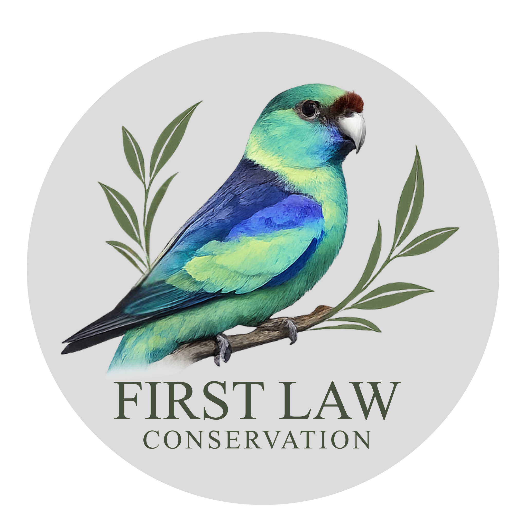

First Law Conservation is a registered charity with the ACNC and holds Deductible Gift Recipient (DGR) status. Donations of $2 or more are tax deductible.

First Law Conservation is grounded on Tati Tati, Kureinji, Latji Latji and Barkindji Country. These lands were never ceded.
We acknowledge and pay our respects to Ancestors and to Country as first law and living knowledge in our efforts to heal Country.

First Law Conservation exists to heal the natural environment through Indigenous-led water governance, land regeneration, native plant cultivation, and cultural stewardship of waterways and Country.
Our work is regenerative. Our staff are here to restore what has been damaged: the waterways, the native vegetation, the cultural practices connected to both. We do this work because we are obligated to. Murray River Country is our kin.
This is why First Law Conservation exists.

First Law Conservation was founded by siblings Thomas and Melissa Kennedy, Tati Tati, their Grandmother's Country, and Gunaikurnai, their Mother's Country. Their connection to the Murray River and surrounding Country is fundamental, ongoing, and ancestral. The river, the Red Gums, the Blackbox forests, the floodplains that breathe with flood and dry: these are not resources we manage. They are kin we are responsible to.